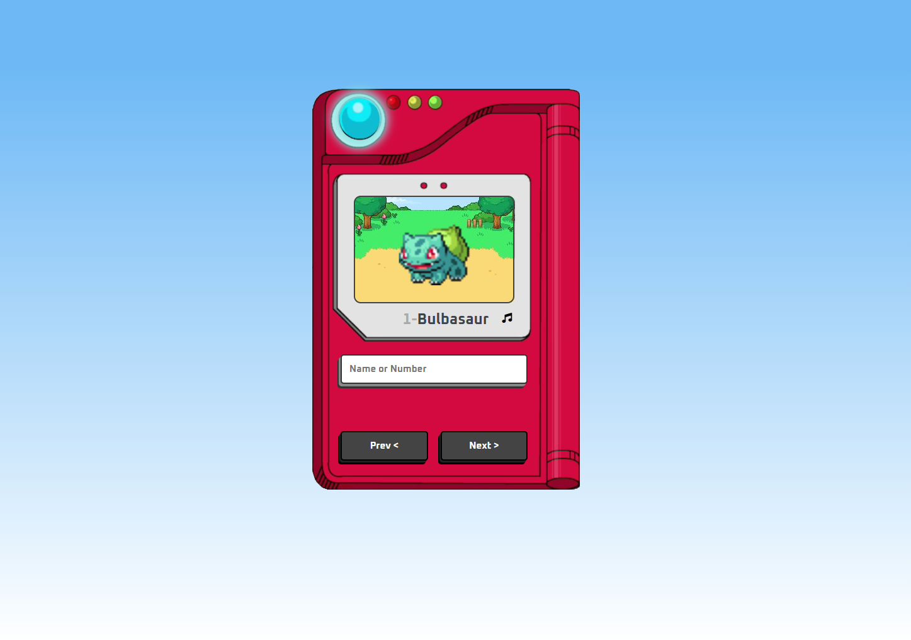

Meu Portfolio



Webservices JAVA back-end
CRUD básico de um sistema de vendas com clientes, pedidos e produtos, utilizando o JPA com hibernate e o banco de dados H2.
- Tecnologias utilizadas:
- JAVA;
- JPA/Hibernate;
- Spring Boot
- Maven;
- Banco de dados H2;